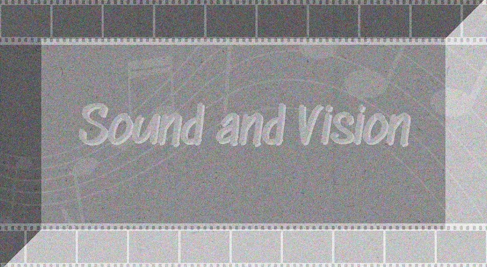
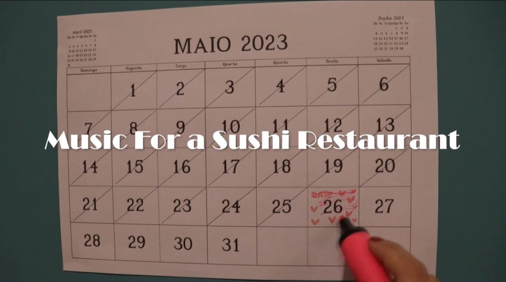
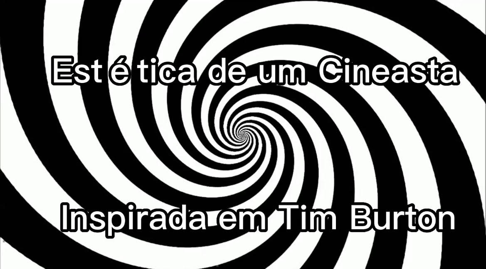
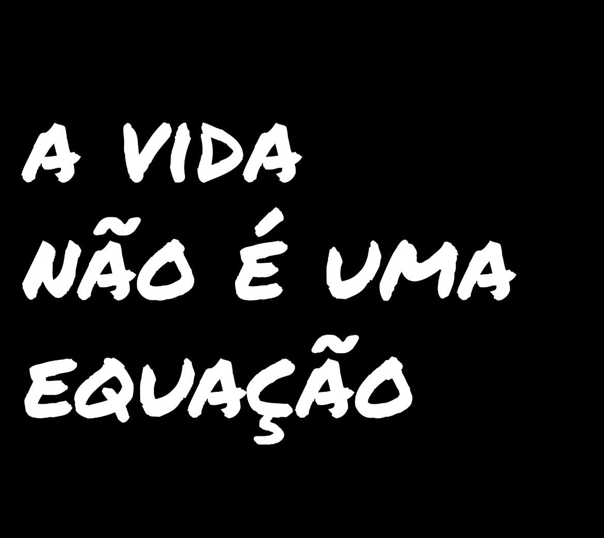
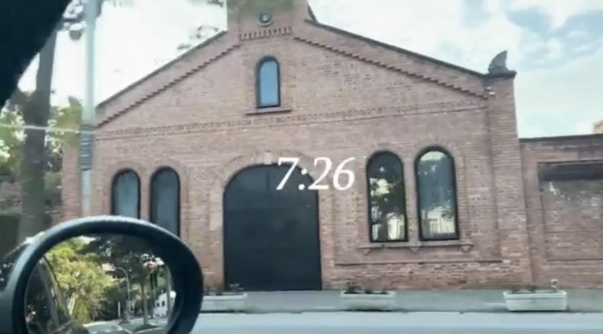

Descrição: Curta produzido a partir de uma palavra: distorção. Um personagem que entra em um mundo diferente de tudo aquilo que ele já havia visto;
Matéria: História da Arte Audiovisual;
Grupo:Gabriela Nastari; Manuella Carmona; Maria Eduarda; Nicolle Chagas; Cauã Martins e Bruno Barone.

Curta Som
Descrição: Como o som afetou o cinema durante os anos;
Matéria: Ciclos de Produção 1;
Grupo: Gabriela Nastari; Manuella Carmona; Maria Eduarda; Nicolle Chagas; Rafael Bitencourt; Tiago Machado e Pedro Diniz.

Videoarte - Music For a Sushi Restaurant
Video clipe alternativo e totalmente experimental de "Music For a Sushi Restaurant" do cantor Harry Styles. Produzido 100% dentro de casa;
Matéria: História da Arte Audiovisual;
Grupo: Gabriela Nastari.

Estética de um cineasta inspirada em Tim Burton
Descrição: Video composto por fotos tiradas no CCSP, cujas contam a história de uma menina que ao cair no sono, se depara com um ambiente que nunca havia visto antes.;
Matéria: Fotografia;
Grupo: Gabriela Nasstari; Bruno Barone e Rafael Franquini.

A vida não é uma equação
Descrição: Um professor muito rígido de matemática se depara com uma melhora de seus estudantes em suas provas. A fim de entender o motivo, o professor cria teorias e passa a noite desvendando o motivo;
Matéria: Eletiva de cinema (escola Carandá Vivavida);
Grupo: Estudantes daa eletiva de cinema (2022).

Mini doc participativo - rotina
Descrição: Mini documentário participativo, onde mostro minha rotina de uma quinta-feira um tanto atarefada;